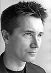

|  |
Pianist and co-artistic director Eugene Gaub was born in Washington, D.C. His debut performances in that city, as well as at the Salzburg Mozarteum and the Vienna Konzerthaus, took place at the age of 17. He first performed in New York five years later, playing Bartok’s First Piano Concerto with the Juilliard Orchestra. A graduate of the Juilliard School, he received a Doctor of Musical Arts degree from the Eastman School of Music, which also awarded him a Performer’s Certificate.
Mr. Gaub has performed solo recitals and chamber music concerts throughout the United States and Mexico. These include performances at the Kennedy Center, the National Gallery of Art, the Weill Recital Hall at Carnegie Hall, Harvard University, and on the Dame Myra Hess Memorial Concert Series in Chicago. He appeared three times as soloist with the Orchard Park
Symphony and has been both piano soloist and continuo harpsichordist with the Buffalo Philharmonic. Mr. Gaub has worked closely with many American composers, including John Adams, whose “Phrygian Gates” he was invited to perform at the 1997 National Conference of the College Music Society. Mr. Gaub taught in Western New York at Erie Community College and Villa Maria College before moving to Iowa to join the faculty of Grinnell College, where he is currently Associate Professor of Music. |